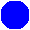
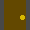
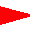

Welcome to my stealth game! You are represented by the blue disk . Your goal is to sneak into this military base, steal the treasure, and escape without being seen.
Move with the QWEADZXC keys. See the diagram. Press "S" to wait one turn. Moving into doors  opens them. Click on doors while beside them to open or close them without moving.
| ↖ Q |
↑ W |
↗ E |
| ←A | S (wait) |
D→ |
| Z ↙ |
X ↓ |
C ↘ |
The map is randomly generated. One or more treasures, represented by yellow disks , are hidden inside buildings. They are protected by guards, represented by red triangles , which point in the direction they're looking. When nearby guards move, you can hear their footsteps.
You lose if a guard sees you. Be careful around windows . Move into a guard (when they don't see you) or click on them, while beside them, to kill them. Move into the treasure, or click on it while beside it, to take it. When you have collected all treasures, escape by running off the map.
Press "L" to make a noise, "luring" nearby guards to investigate. It is dangerous but useful.
This game was made by Elliot Burkart.